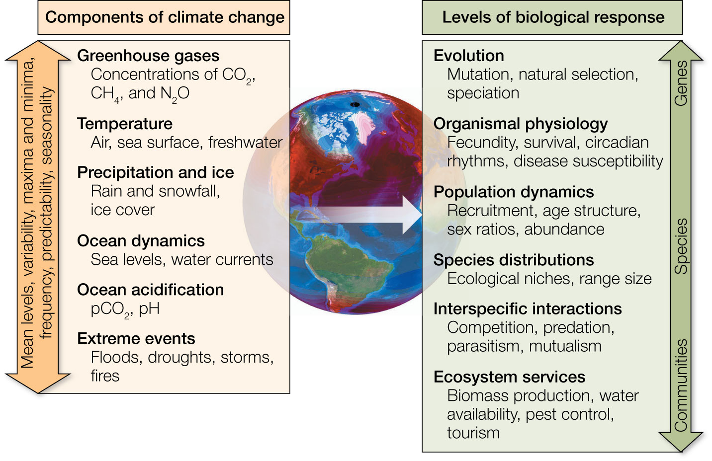
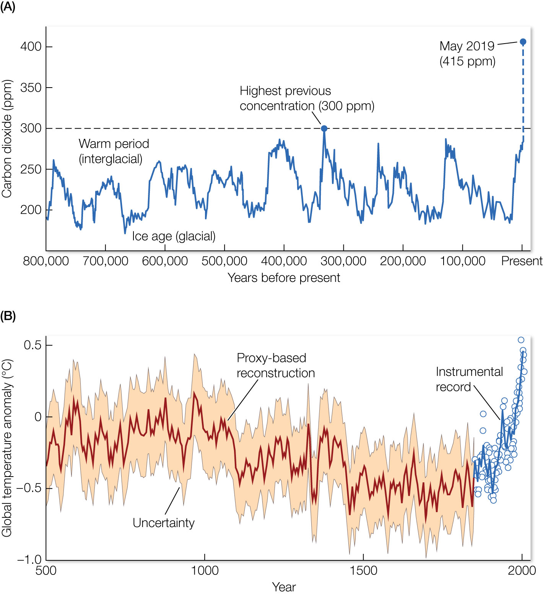
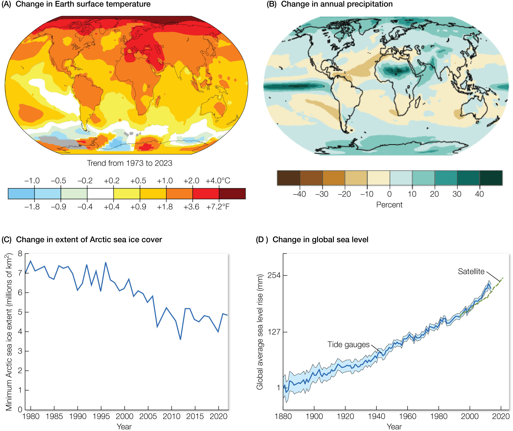
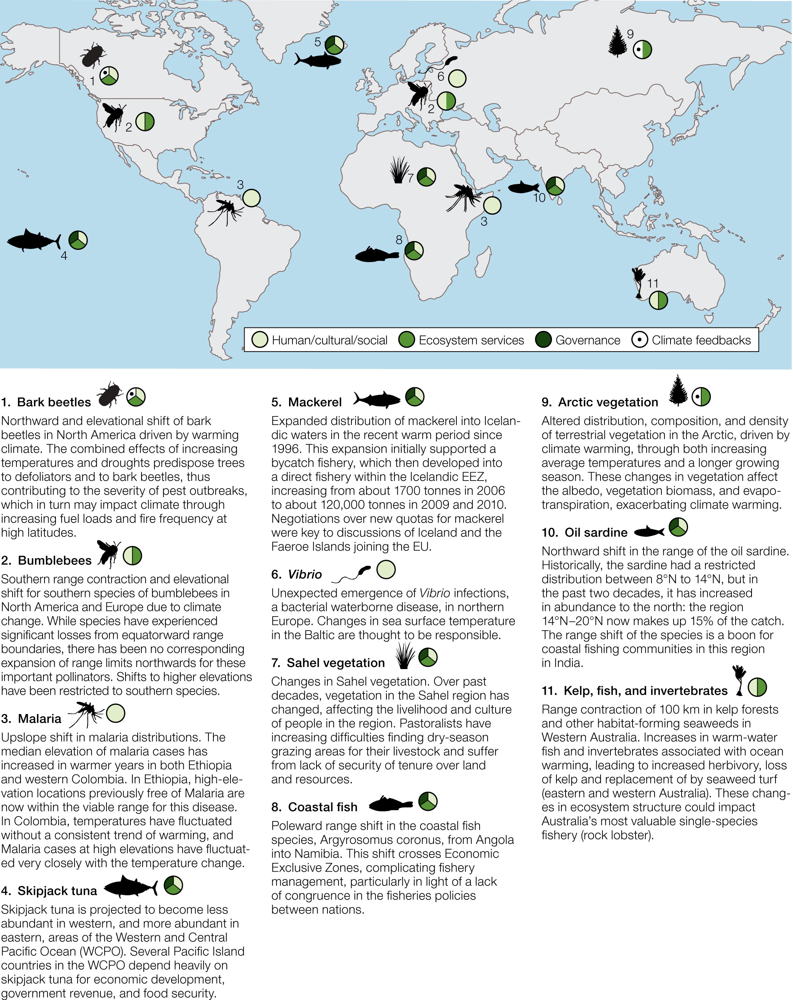
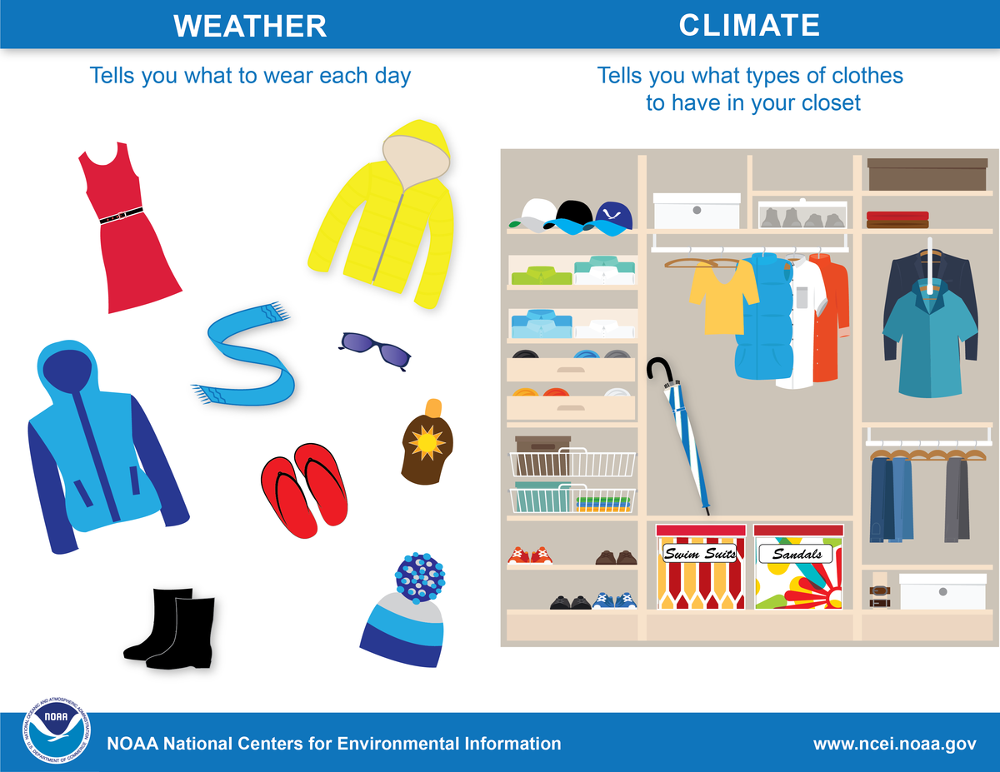
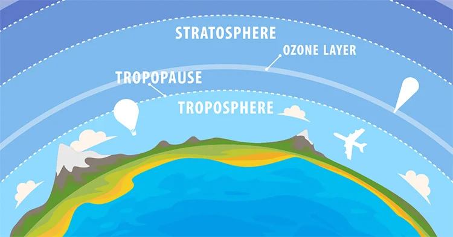

Observing & Modeling Climate
Human Health & the Environment
Human Health & the Environment - Thu Sep 4, 2025
Observing & Modeling Climate

Basics
Climate
Anthropogenic emission of greenhouse gases have increased dramatically in the postindustrial era, reaching unprecedented concentrations.
Crash Course: Climate Change
Video length = 14 min
Warming

Sea Level

Species Redistributions

Monitoring Climate

- NOAA (National Oceanic and Atmospheric Administration)
-
- Agency’s work includes monitoring rising global temperatures, increasing sea levels, shrinking glaciers, rising atmospheric CO2 levels, and changes in ocean health.
-
- They also provide climate information to help communities and businesses prepare for and respond to impacts like severe floods, droughts, and disruptions to marine ecosystems and industries.
Climate Normals

Averages in:
- Precipitation
- Temperature
- Humidity
- Sunshine
- Wind
Climate

Weather
The mix of events that happen each day in our atmosphere
- Even though there’s only one atmosphere on Earth, the weather isn’t the same all around the world.
- Weather is different in different parts of the world and changes over
- minutes
- hours
- days
- weeks
Weather

- Many different factors can change the atmosphere in a certain area
- air pressure
- temperature
- humidity
- wind speed and direction
- many others…
Bridging the Gap
Why is it difficult to definitively link extreme weather events to climate change?
. . .
And why does this matter?
Models
- A model-based investigation requires some combination of model, data, analysis, and computation to better understand or predict a complex, real-world system.
- An iterative process, using initial results and inferences and human judgment to improve data collection, modeling, computation, and/or analysis methods.
Climate Models
- Over the years, the number of components being modeled has increased, as has the size and disciplinary expertise of the teams developing the models.
World Weather Attribution
- An international effort to analyze and communicate the possible influence of climate change on extreme weather events, such as storms, extreme rainfall, heatwaves, cold spells, and droughts.
Health-Specific Threats
Key Health Impacts
- Exacerbation of existing health problems.
- Creation of new and unanticipated health problems.
Extreme Weather Events
- Changes in:
- Frequency
- Intensity
- Duration of extreme events
. . .
- Overall Impacts:
- Loss of life
- Economic damages
. . .
- Event-Related Health Risks:
- Risks during, before, and after events.
- Extended health risks due to property damage and environmental degradation.
- Unique risks from simultaneous or successive events.
[This figure provides 10-year estimates of fatalities related to extreme events from 2004 to 2013, as well as estimated economic damages from 58 weather and climate disaster events with losses exceeding $1 billion.]
Climate Change and Air Quality
Modified weather patterns impact the levels and locations of outdoor air pollutants, such as:
- Ground-level ozone (O3)
- Fine particulate matter
. . .
Poor air quality, whether outdoors or indoors, negatively affects:
- Respiratory systems
- Cardiovascular systems
[Two downscaled global climate model projections using two greenhouse gas concentration pathways estimate increases in average daily maximum temperatures of 1.8°F to 7.2°F (1°C to 4°C) and increases of 1 to 5 parts per billion (ppb) in daily 8-hour maximum ozone in the year 2030 relative to the year 2000 throughout the continental United States. ]
Impact of Increasing CO2 Levels
Elevated CO2 levels promote the growth of plants that release airborne allergens (aeroallergens).
. . .
- Changes in outdoor air quality and aeroallergens also impact indoor air quality as:
-
Pollutants
- Aeroallergens
Pollen Effects
- Increased pollen concentrations and extended pollen seasons lead to:
- Higher rates of allergic sensitization
- More frequent asthma episodes
- Reduced productivity at work and school
Impacts on Water
- Precipitation and temperature changes affect fresh and marine water quantity and quality primarily through urban, rural, and agriculture runoff.
- This runoff, in turn, affects human exposure to water-related illnesses primarily through drinking water, recreational water, and fish or shellfish contamination.
Impacts on Water
Water Resources
- Climate change is expected to affect fresh and marine water resources across most of the United States.
- These changes will likely increase exposure to water-related contaminants that cause illness.
Illnesses
- Waterborne pathogens: Bacteria, Viruses, Protozoa
- Toxins produced by: harmful algae, cyanobacteria
- Exposure via ingestion of contaminated drinking water, inhalation or skin contact with recreational water, consumption of contaminated fish/shellfish.
Risk Management
- Temperature, precipitation runoff, hurricanes, and storm surges influence the growth, spread, and toxicity of pathogens and toxins.
- Water quality monitoring, Drinking water treatment standards and practices, Beach closures, Advisories for boiling drinking water and shellfish harvesting